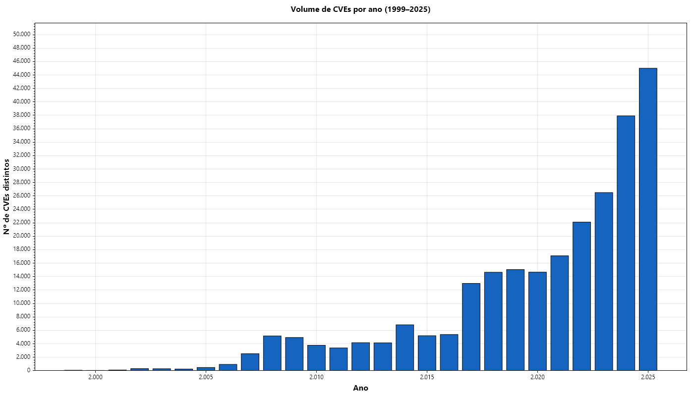
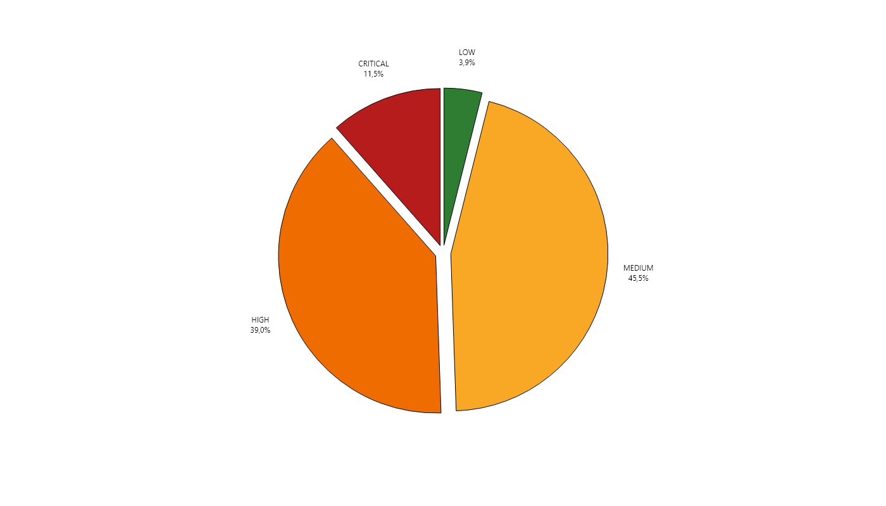
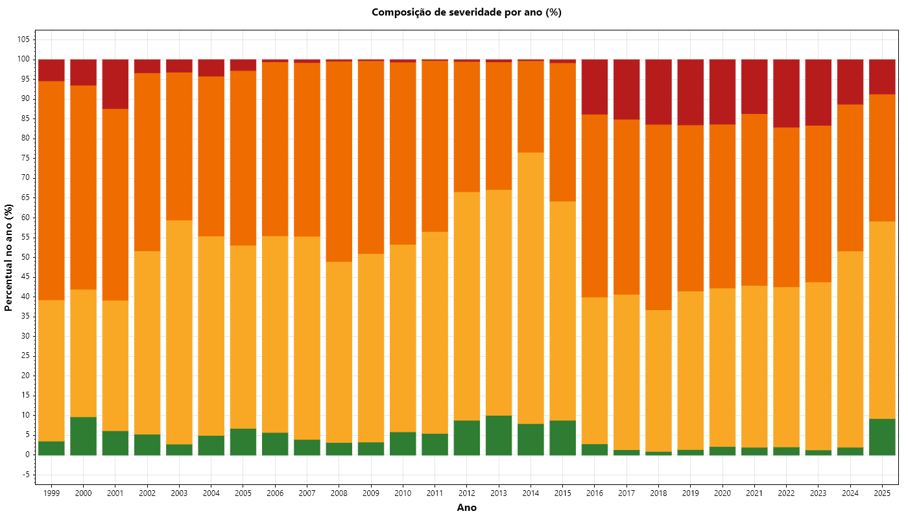
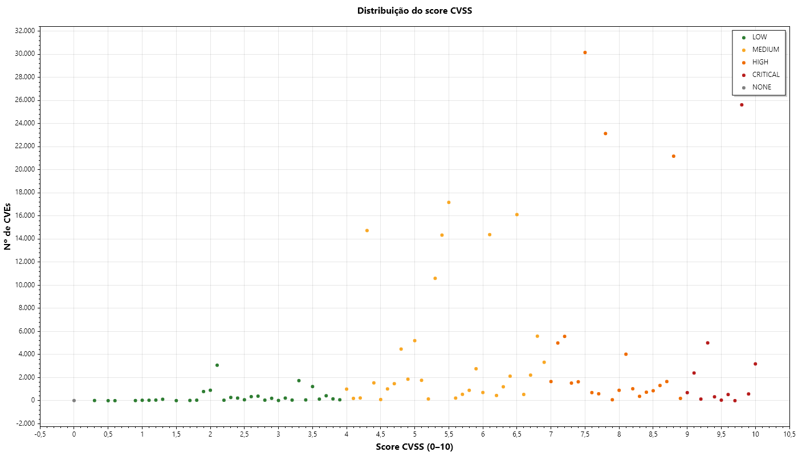
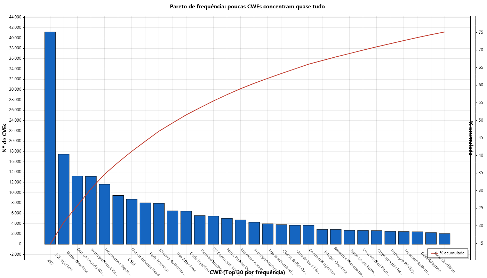
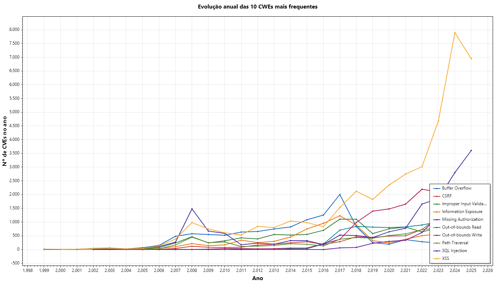
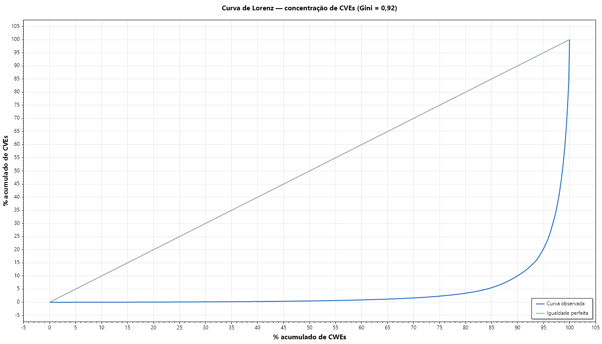
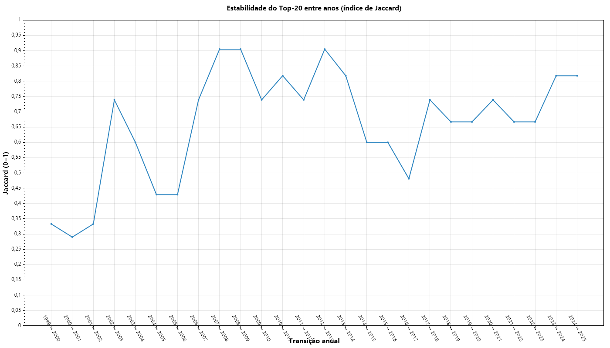
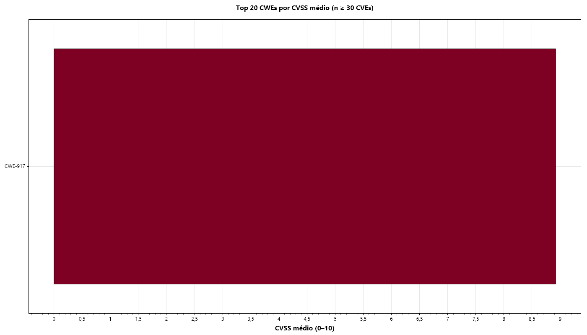
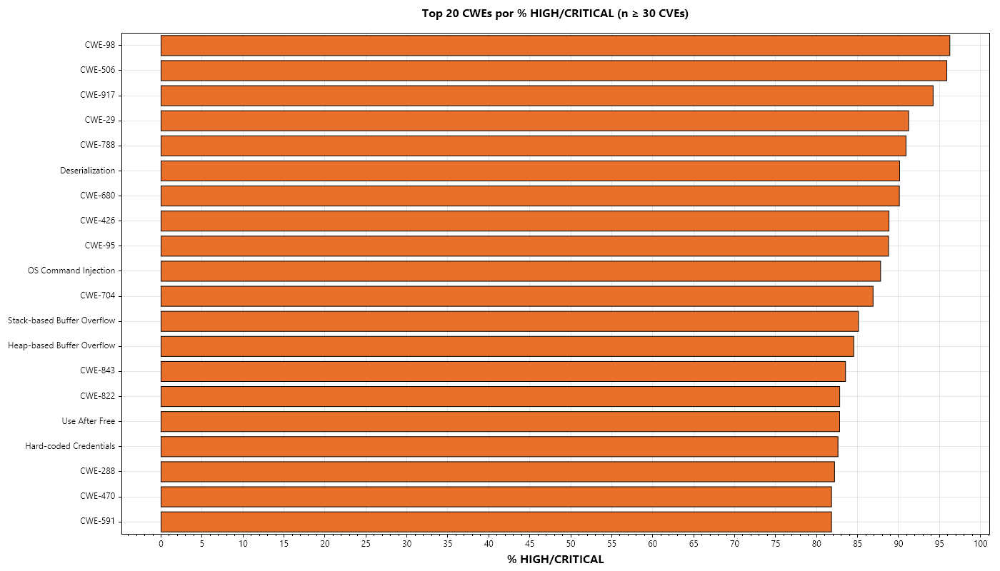

Caracterização do Dataset — Vulnerabilidades NVD (1999–2025)
CVEs distintos253.802
Relações CVE↔CWE278.912
CWEs distintas749
Cobertura CVSS99,99%
CVSS médio6,88
CVSS mediana7,00
Gini0,9223
Período1999–2025
Fonte: NIST NVD. Unidade: relação CVE↔CWE. Relações (278.912) > CVEs distintos (253.802) pois cada CVE pode ter múltiplas CWEs.
| Severidade | Nº CVEs | % | CVSS médio | CVSS mediana |
|---|
| LOW | 10.897 | 3,91% | 2,62 | 2,30 |
| MEDIUM | 127.021 | 45,54% | 5,58 | 5,50 |
| HIGH | 108.894 | 39,04% | 7,98 | 7,80 |
| CRITICAL | 32.057 | 11,49% | 9,72 | 9,80 |
01 cves por ano

02 severidade donut

03 severidade por ano 100pct

04 distribuicao cvss

RQ1 — Quais CWEs concentram a maior parte das vulnerabilidades?
Hipótese: distribuição não-uniforme (Pareto). Veredito: 38 CWEs = 80%; Gini = 0,92.
CWEs Pareto 80%: 38
Gini: 0,9223
01 pareto top30

02 tendencia top10

03 curva lorenz

04 persistencia jaccard

RQ2 — Quais CWEs têm maior potencial técnico de dano (CVSS)?
Hipótese: severidade varia entre CWEs. Veredito: Kruskal-Wallis p < 0,001; cluster CVSS ≈ 9,8.
CVSS médio global: 6,88
Mediana: 7,00
01 top30 cvss medio

02 top30 high critical
